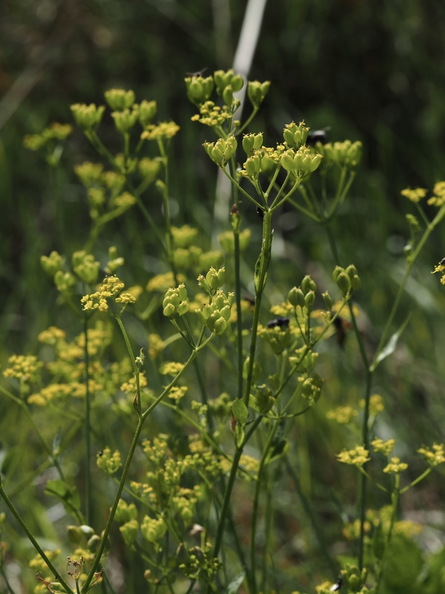
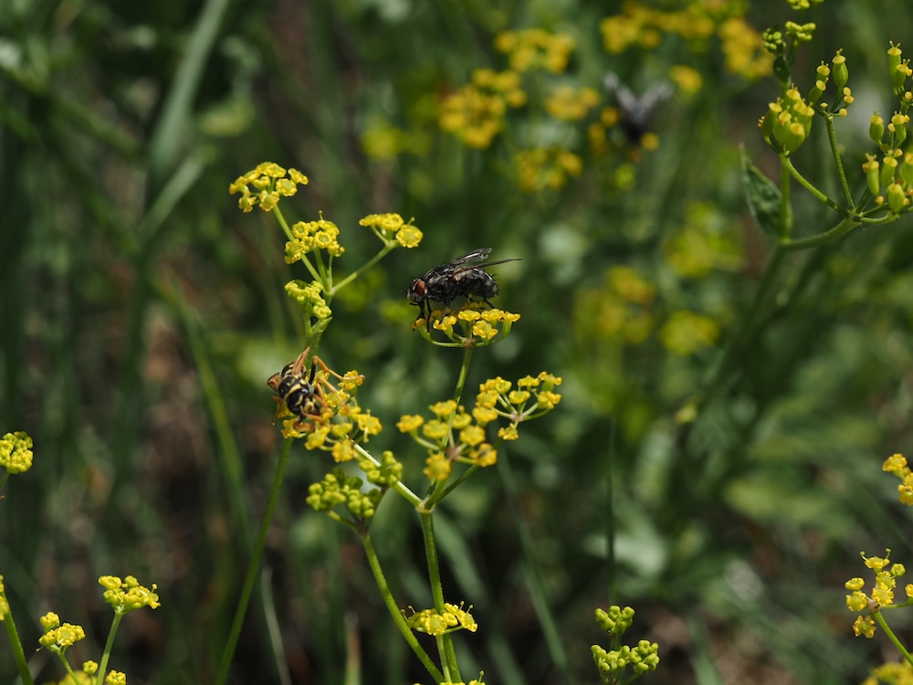

Vorfahre des modernen Pastinaks — mit Karotten-Cousin auf jeder Wiese.



Comeback-Gemüse
Pastinak war bis ins 18. Jahrhundert eines der wichtigsten Wintergemüse Europas — bevor die Kartoffel ihn verdrängte. Die süßlich-würzige Wurzel der Wildform schmeckt durchaus essbar (deutlich besser als die der Wilden Möhre), aber sie ist kleiner und schwächer als ihr Zucht-Bruder. Nach einer langen Pause erlebt der Pastinak heute als Bio-Gemüse ein leichtes Comeback — herzhaft, vielseitig, gut lagerbar.
Vorsicht: Phototoxisch
Wie der Bärenklau enthält auch der Pastinak Furanocumarine — Hautkontakt + Sonne kann zu unangenehmen Verbrennungen führen. Schon beim Sammeln (auch der Zucht-Pastinaken!) Handschuhe tragen, besonders bei sonnigem Wetter. Diese „Sonnenallergie“ ist ein evolutionärer Trick der Pflanze gegen Pflanzenfresser.
Wissenswertes & Merksätze
Erkennen leicht gemacht
Aufrechter, kantig-gefurchter Stängel, oben oft hohl. Blätter gefiedert, mit großen, eiförmigen Fiederblättchen (gröber als bei der Möhre). Doldenstrahlen mit kleinen gelblichen Einzelblüten — typisch GELB, nicht weiß wie bei den meisten Doldenblütlern.
Geruchstest
Beim Zerreiben der Wurzel oder Blätter unverwechselbarer Pastinak-Geruch (süßlich-würzig). Genau dieser Geruch ist eines der besten Erkennungsmerkmale — und unterscheidet ihn klar von ähnlichen Doldenblütlern.